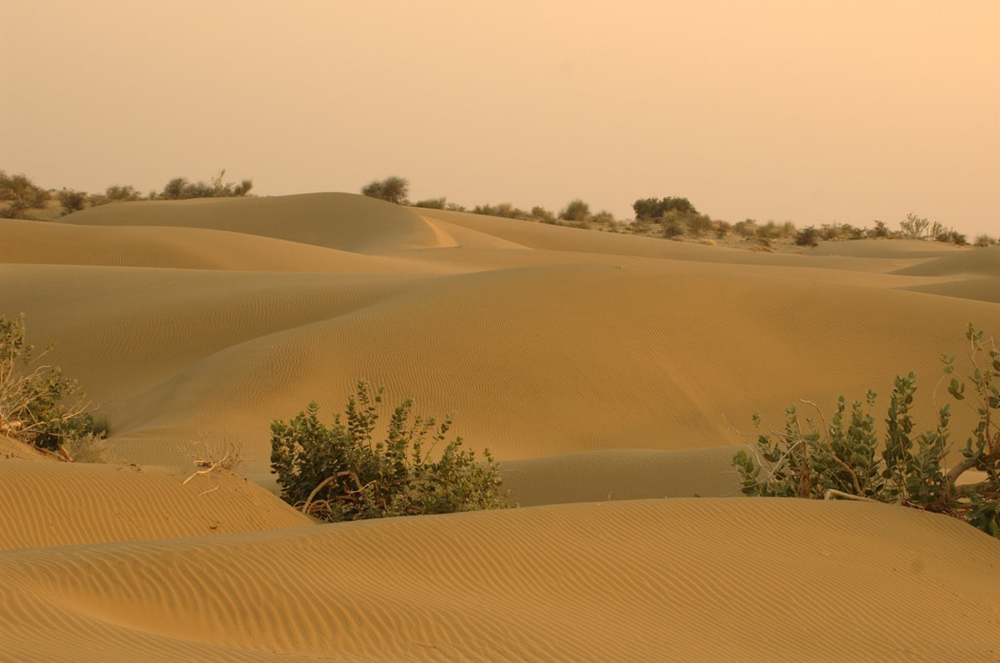

- Home
- Mountains
- Velleys
- Deserts
- Rivers
Deserts
Pakistan hosts five deserts which were historical forests. They include the Thar Desert in Sindh, the
Cholistan Desert in Bahawalpur (Punjab), the Thal Desert in Bhakkar (Punjab), the Kharan Desert in
Balochistan, and the Katpana Desert in Skardu (Gilgit-Baltistan)
Thar Desert
The Thar Desert is said to be the heart of Pakistan, due to the rich cultural heritage that is possessed in
the
form of folk songs, art, rituals and traditions, making it the country’s cultural treasury. It is the
largest
desert in the country and is a picturesque land of rolling hills of sand, endless sand dunes and mesmerizing
sunsets. Due to its large size that covers about 77,000 square miles, it is located partly in the province
of
Punjab and Sindh and stretches out to northwestern India. It is a desert of unparalleled beauty. Its rich
cultural traditions, dresses and dances of the people against the backdrop of an ocean of glittering sand
make
it a destination worth visiting and experiencing.

Cholistan Desert
Man carrying water in Cholistan
The Cholistan Desert is locally known as "Rohi 'and covers the area of Bahawalpur, Punjab. It adjoins the Thar
Desert, extending over to Sindh and into India. Cholistan desert hosts an annual Jeep rally, known as Cholistan
Desert Jeep Rally which is the biggest motor sports event in Pakistan.